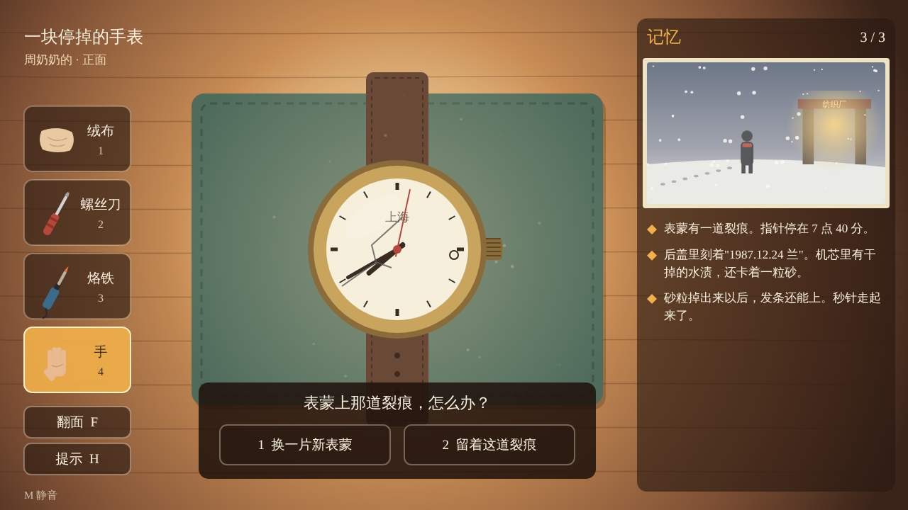
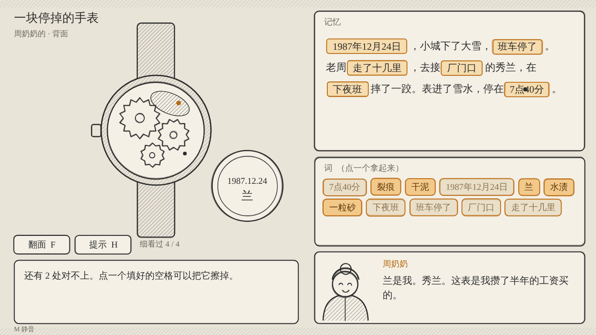

旧物铺
一家修旧物的小铺。客人带着旧东西来，每一件都藏着一段记忆。这里有两个试玩版本：同一个故事，两种玩法。每版大约 6 到 10 分钟。


用电脑玩最合适，有声音。按 M 可以静音，按 H 有提示。
玩完想听你说：哪一版更让你在意物主的故事？最好的一刻和最差的一刻是什么？
一家修旧物的小铺。客人带着旧东西来，每一件都藏着一段记忆。这里有两个试玩版本：同一个故事，两种玩法。每版大约 6 到 10 分钟。


用电脑玩最合适，有声音。按 M 可以静音，按 H 有提示。
玩完想听你说：哪一版更让你在意物主的故事？最好的一刻和最差的一刻是什么？